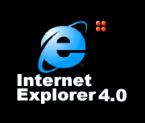
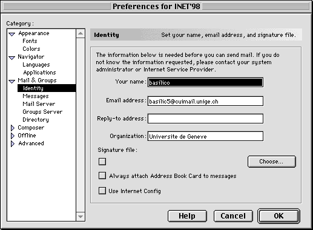
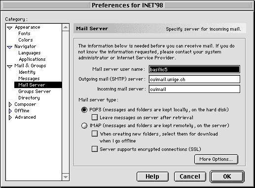
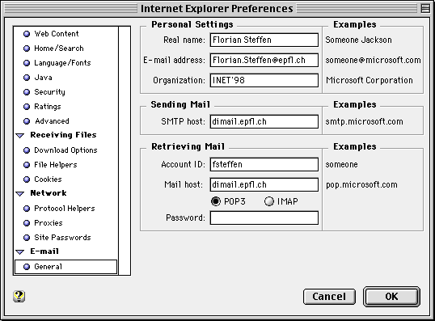

http://cuiwww.unige.ch |
Reading E-Mail on public PCs
|

http://www.inet98.ch |
|
 |
Overview
This page describes how to access your personal mailbox (at your organization or internet service provider) on a public PC or a public MAC, both available in the Internet Access Room (IAR, open from 7:30 AM to 10:00 PM, non-stop).
For unanswered questions, please refer to the Q&A Forum at http://www.inet98.ch/forum or (for urgent questions only) contact an IT support team member at Bureau 4.
Netscape Navigator
- Select the Edit/Preferences menu item.
- To configure your
personal settings, fill the Your Name and Email Address fields
with respectively your name and the email address you usually use.

- Setup the Mail Server configuration with the values below, use
your personal e-mail server for SMTP and Incoming Mail host
(usually, when your e-mail is name@server.com,
the mail server is mail.server.com):

Microsoft Internet Explorer
- Select the Options/Preferences menu item.
- To configure your personal settings, as well as the network
settings, choose the E-Mail/General
section and fill in the values as shown below. Use your SMTP and Incoming Mail host:

Checking Mail
Once these settings made (you will have to go through the setup each time you use a new public machine), you can use the public PC or the public MAC to read your mail, surf the internet, etc. You will be prompted for your password as you attempt to check your mail for the first time.
Leaving Public PCs
In order to keep your e-mail confidential, we do strongly advise to reboot (turn off and turn back on) the public PC you have used, once you've finished. Do not reboot MACs! Public PCs work as network computers. Hard disks are overwritten at boot time and the boot ROM system enforces a reasonable amount of security as all data is overwritten with a clean image as you turn the PC on again.
http://cuiwww.unige.ch